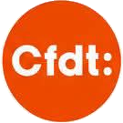

Élections du CSE
Novembre 2026

Information aux salariés
Vote électronique : de quoi parle-t-on ?
La direction nous impose le vote électronique pour les prochaines élections.
Voici ce que vous devez savoir, simplement.
Ce qui change
Pas d'urne cette fois : chaque salarié vote sur un système informatique,
avec les moyens de s'identifier fournis par l'entreprise. La loi permet à la direction de
le décider et les syndicats ne peuvent pas s'y opposer.
Mais les règles de ce vote se négocient. C'est là que nous pouvons
obtenir des garanties pour vous.
Ce n'est pas une première. Lors des dernières élections, nous avions
déjà eu un vote électronique, et cela ne s'était pas bien passé. Nous serons
donc très vigilants.
Le PAP, c'est quoi ?
Le protocole d'accord préélectoral : un accord écrit entre la direction
et les syndicats, signé avant les élections. C'est la règle du jeu fixée
avant le match.
- Les dates des deux tours ;
- la façon de voter (ici, en ligne) et le calendrier du vote ;
- le dépôt des listes de candidats ;
- le vote des salariés absents ou en déplacement.
Qui décide ?
La direction doit inviter les syndicats à négocier. Chacun doit prouver
qu'il a le droit de le faire (statuts, comptes, mandat).
Le PAP n'est valable que s'il est signé par la majorité des syndicats
présents, dont ceux qui pèsent le plus aux dernières élections.
Les règles précises seront connues à la signature du PAP.
Chaque voix compte
Élections du CSE · novembre 2026

Nos points de vigilance sur le vote électronique
Ce que nous vérifions dans le PAP, pour que vous votiez en toute confiance.
1
Un mode d'emploi accessible
Le cahier des charges du système est écrit et à la disposition de tous.
2
Le secret du vote
Personne ne doit savoir qui a voté pour qui.
3
La sécurité
Envoi des identifiants, contrôle d'un seul vote par personne, enregistrement et dépouillement.
4
L'accès à l'urne électronique
Qui peut y accéder, quand et sous quel contrôle.
5
Une aide en cas de problème
Une assistance technique pour celles et ceux qui n'arrivent pas à voter.
6
Des personnes formées
Élus et bureau de vote formés pour pouvoir contrôler le système.
7
Le sort des données
Les fichiers sont conservés le temps nécessaire, puis détruits.
8
Les salariés absents
Congés, formation, déplacement : chacun doit pouvoir voter.
Notre position : la dernière fois, le vote électronique ne s'est pas bien
passé : nous serons vigilants. Avant le Covid, la CFDT le déconseillait déjà (il éloigne les
militants des salariés et augmente souvent l'abstention). Même imposé, nous irons à votre
rencontre et nous vous aiderons à voter.
Vous voulez être sur la liste CFDT ?
Les élections se préparent maintenant. Si vous souhaitez vous présenter ou en savoir plus,
contactez-moi. Femmes et hommes de tous les services sont les bienvenus.
Pour être candidat : avoir 18 ans et 1 an d'ancienneté dans l'entreprise.
Thierry Krempff · Délégué Syndical CFDT
06.87.15.23.64
thierry.krempff@gmail.com
cfdt-ineos-sarralbe.fr
Votez et faites voter CFDT